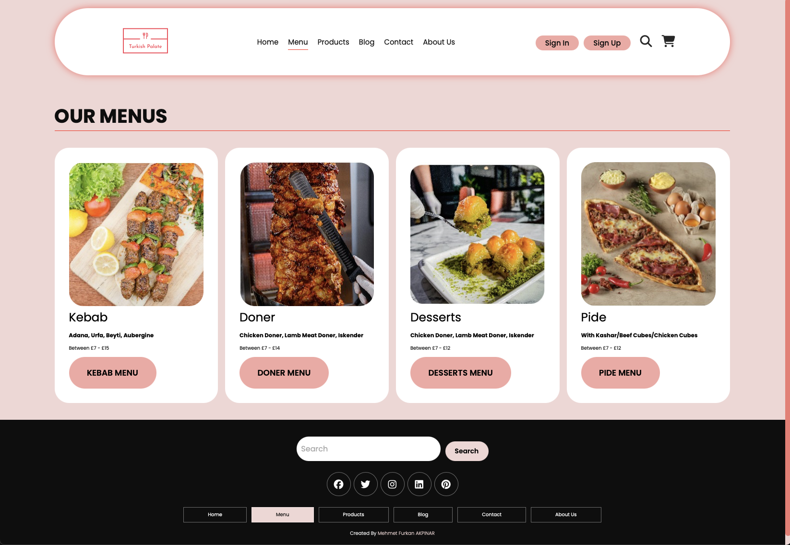
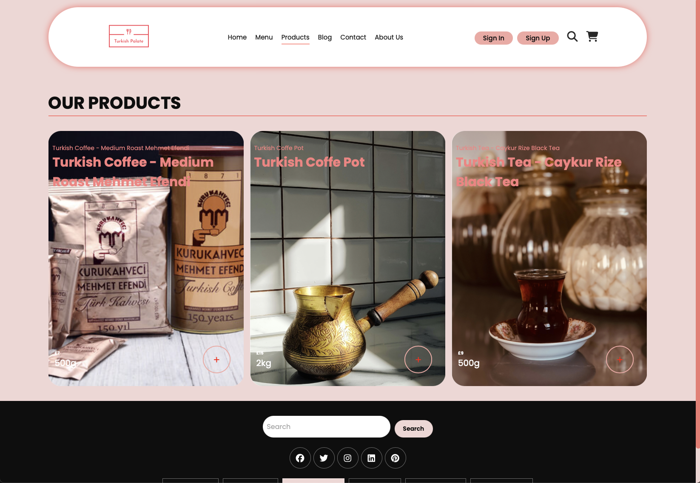
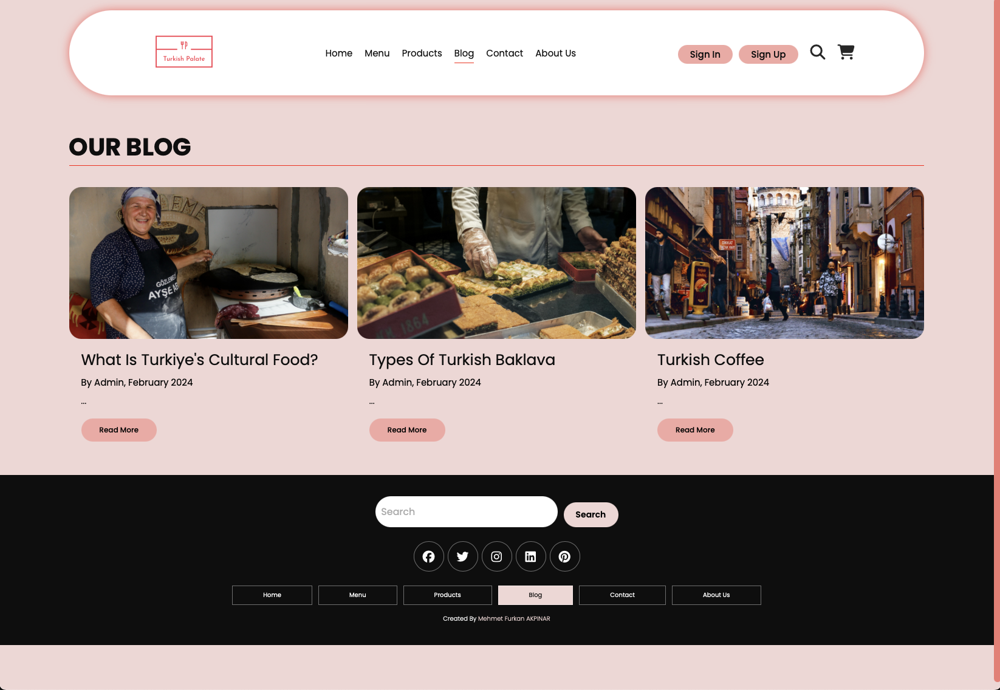
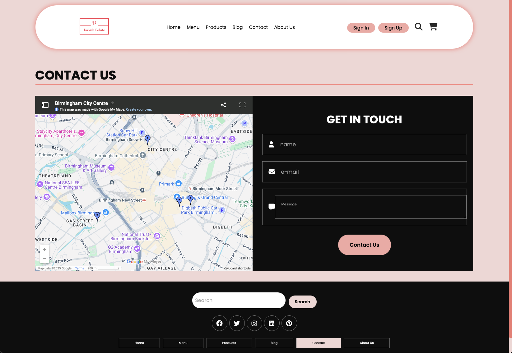
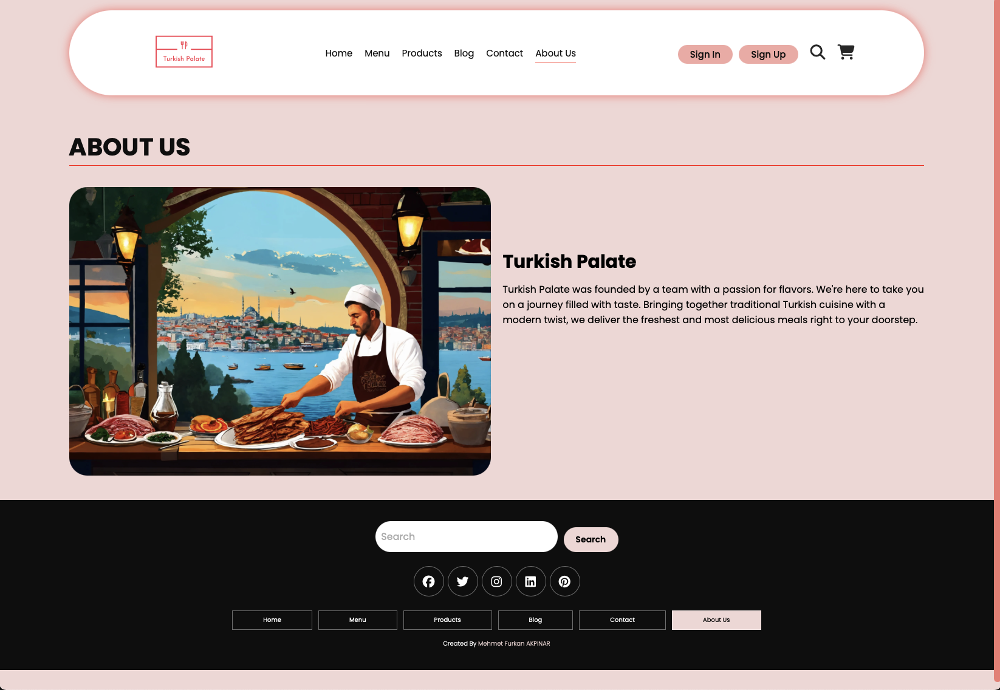
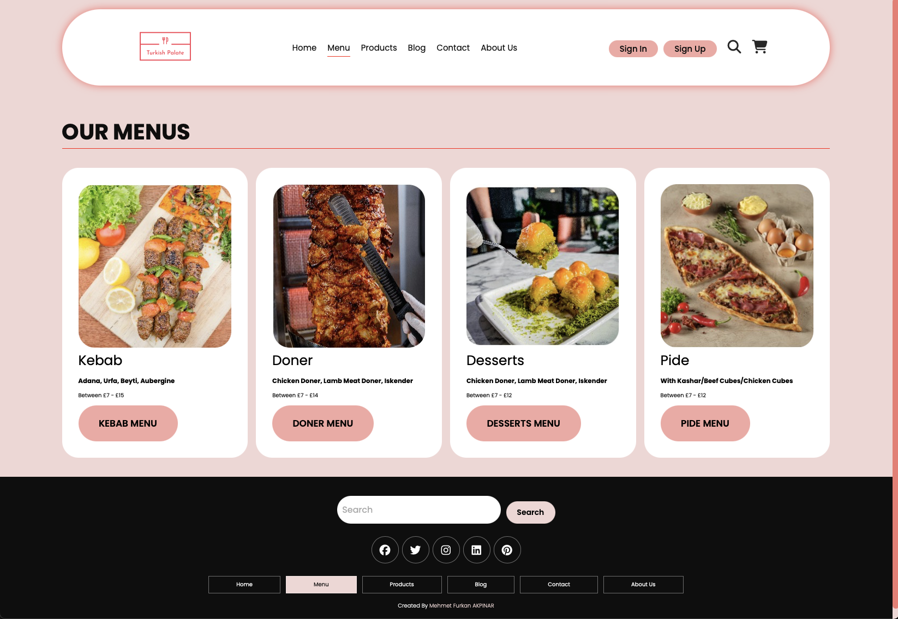
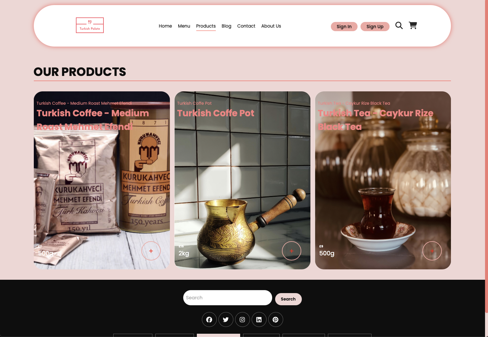
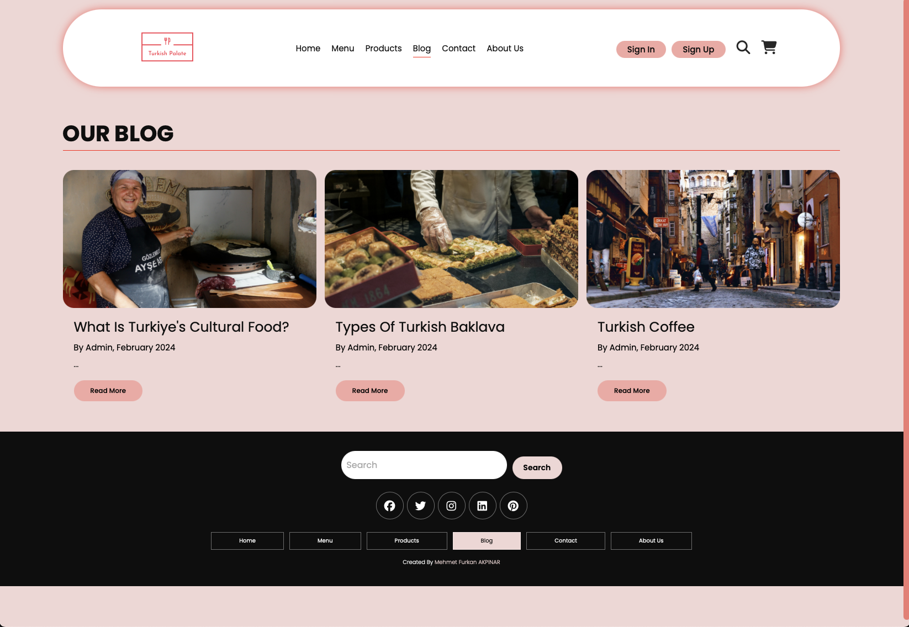
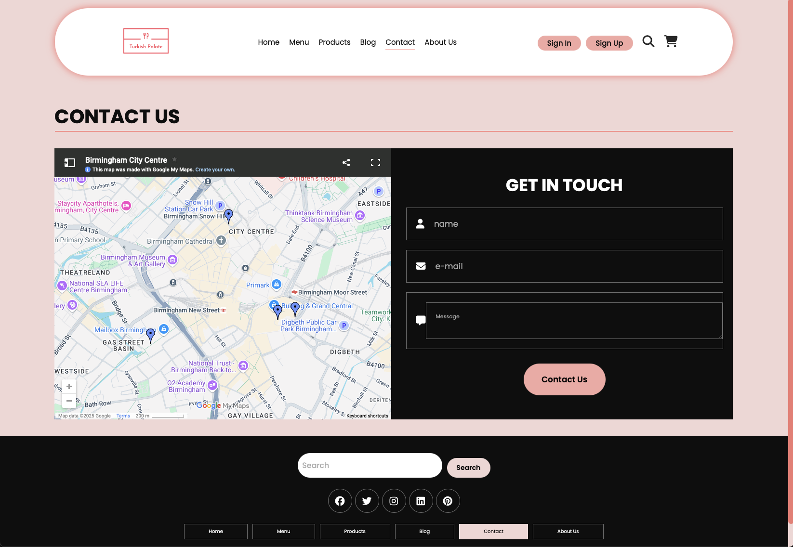
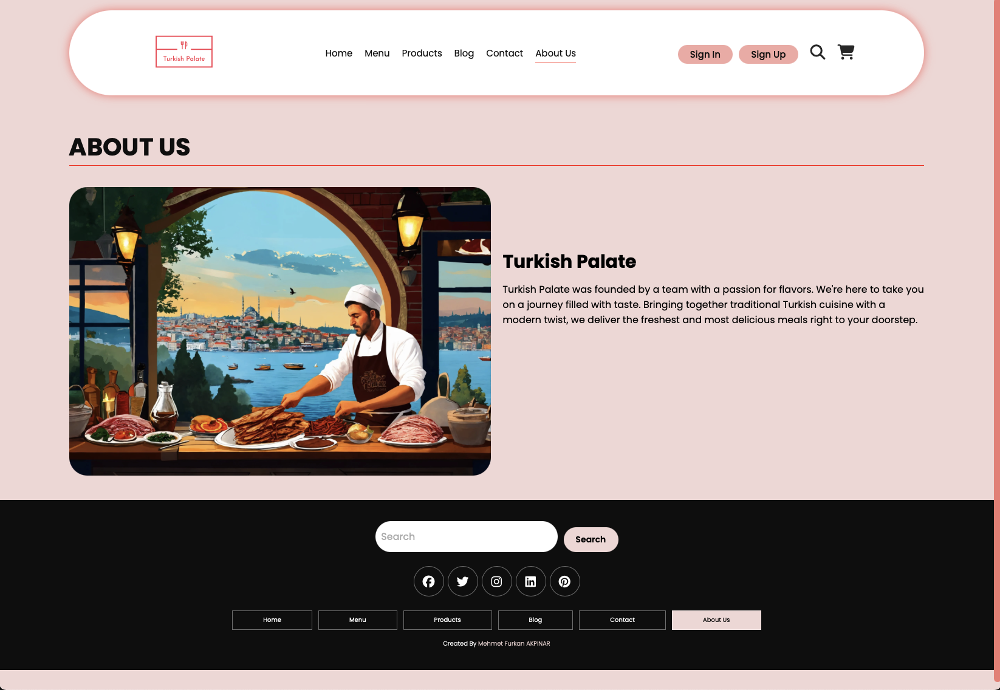

🧠 Project Motivation
This project was part of my Web Development module during my master's programme. The brief was simple: build an engaging, responsive website about a topic that you're interested in. And I chose Turkish cuisine—a rich, vibrant part of my culture. It wasn't just about meeting course requirements; it was genuinely enjoyable to bring something personal and authentic into a technical project. Although this assignment was quite challenging for me—being the first time I'd ever built a fully functional website—I genuinely learned a great deal from the experience.
🍽️ Turkish Palate – A Taste of Turkey Online
🌐 About the Project
"Turkish Palate" is a responsive, interactive website designed to introduce users to the delicious diversity of Turkish cuisine. Featuring clear navigation, appealing visuals, and detailed information about traditional Turkish dishes, the site was developed to offer an immersive online culinary experience.
🎯 Features at a Glance
- Responsive Design: Ensures smooth navigation on desktops, tablets, and smartphones.
- Interactive Menu: Detailed descriptions and vibrant imagery of Turkish dishes.
- Shopping Cart Functionality: Allows users to add products to a cart and simulate online purchases.
- User Authentication: Sign-in and sign-up functionality for personalised user experiences.
- User-friendly Interface: Simple, intuitive navigation for an enjoyable browsing experience.
- Dynamic Content: Interactive blog and product sections that enhance user engagement.
🛠️ Technologies Used
- HTML5 & CSS3
- JavaScript
- Responsive Web Design
- UX/UI Design Principles
📸 Project Screenshots
 









💬 Reflection & Learning Outcomes
Working on "Turkish Palate" allowed me to significantly enhance my web development skills, particularly regarding responsive design and UX/UI principles. Although I realised web development might not be my favourite area, blending digital tools with cultural expression was still a rewarding experience. This project gave me valuable insights and helped me clarify the direction I want to take in my future career.